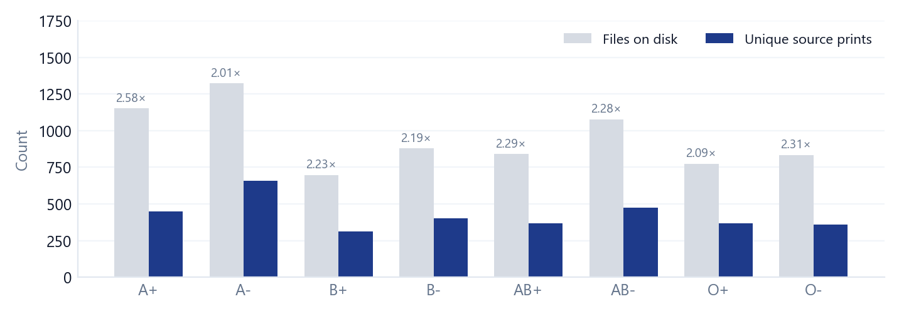
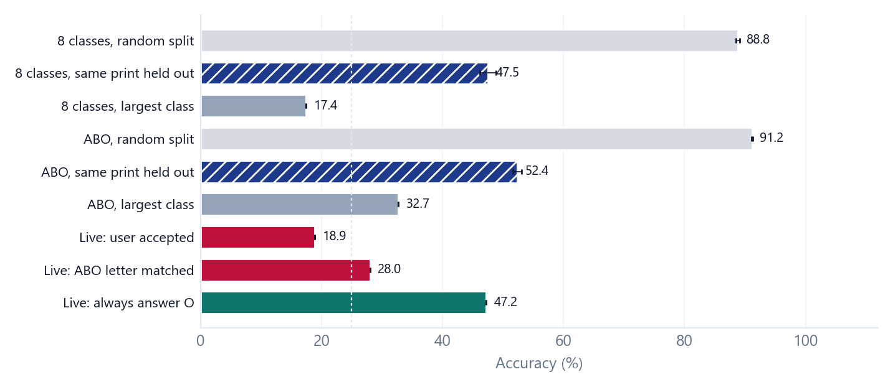
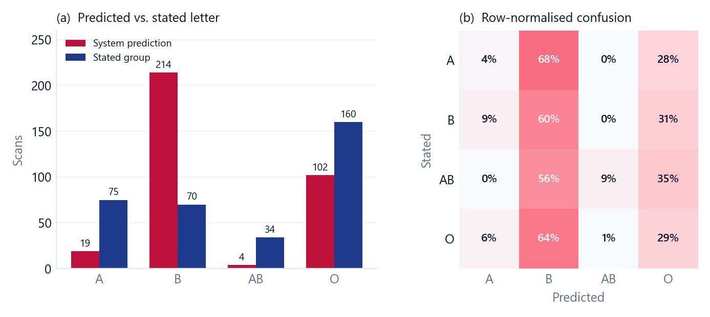
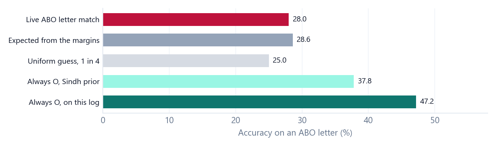

NEGATIVE RESULT · PREPRINT
Not a Blood Test: Duplicate Leakage, Label Editing, and a 339-Scan Failure of Fingerprint ABO Classification
ABSTRACT
BACKGROUND Papers on fingerprint blood-group classification routinely report accuracy above 90% from internal splits of a public image set whose labels were not measured by serology. METHODS We built the system such papers usually stop short of: a local web application, a Suprema BioMini scanner, a 29-number texture-and-ridge descriptor, a random forest, hand-written correction rules and an instance memory that learns from user corrections. We audited the offline evaluation and logged 339 live scans against self-reported blood group. RESULTS The public set was downloaded and then copied and augmented locally so the collection would fit the classifier more evenly. The working copy holds 7,576 files but only 3,389 distinct source prints. The added files are feature-identical copies, and some images were also moved between class folders. A random split scores 88.8% (eight classes) and 91.2% (ABO letter); holding out every copy of a print cuts these to 47.5% and 52.4%. On the live scanner the ABO letter matched the stated group in 95 of 339 scans (28.0%; 95% Wilson interval 23.5–33.0), which is what the margins alone predict (28.6%; Cohen’s κ = −0.008, balanced accuracy 25.5%). Always answering “O” scores 47.2%. The system predicted B on 63% of scans. CONCLUSIONS The classifier is not a blood-typing method, and further tuning on these folders will not make it one. The reusable products are a four-check evaluation audit and a prospective scanner log.
Keywords ABO blood group · fingerprint biometrics · dataset leakage · negative results · external validation · continual learning
1 Introduction
A fingerprint takes a second; a blood type takes a sample and a reagent. The hope that the first can replace the second is easy to understand, and a large student literature now treats it as image classification. Internal accuracies of 90% or more are common, and some papers present the resulting networks as practical alternatives for emergency or rural care [1], [2].
A weak population association is not an individual test. Studies that actually typed the blood of the people whose fingers they printed have repeatedly failed to find a relationship strong enough to assign a group [3], [4]. A second problem sits inside the image-classification papers: many train and test on a public folder dataset whose eight blood-group labels were not measured, by serology, on the people in the images. A recent critical review concludes that accuracy on this collection classifies the assigned folder, and that a clinical claim needs laboratory ground truth and a subject-disjoint external test [5]. This is a specific case of two general hazards: leakage in machine-learning-based science [6] and duplicate images shared by training and test sets [7].
We built the full system and measured it on a scanner that did not produce the training files. The result is negative. An early demonstration of the prototype received first position at a project exhibition at Sukkur IBA University, Dadu Campus. That prize recognised the demonstration, not a measured accuracy. Our contributions are:
- a prospective log of 339 correction events from a scanner that did not produce the training files, scored against a largest-class baseline and a chance-corrected agreement statistic;
- a measurement showing that files we added after download, and named as augmentations, are exact feature copies, so a random split reports 88.8% where a same-print split reports 47.5%;
- a continual-learning record: refitting the forest on a few corrections forgot the other classes, while an instance memory avoided forgetting without learning any blood-group rule;
- a four-check audit (Box 1) that a later project can run before writing an abstract.
The system must not be used to screen, triage or type blood, and a next model should not be trained on these folders.
2 Background
2.1 Why a high accuracy was unlikely
ABO type is a small, well-mapped antigen system. Fingerprint pattern is a polygenic skin trait fixed early in fetal life [4]. Two traits can be statistically dependent in a population and still be useless for naming one person’s group.
Chaudhary and colleagues typed 700 hospital participants by antibody cross-reaction and took inked prints; loops dominated in every group, no comparison against ABO or Rh was significant, and the authors concluded that fingerprints cannot be used for blood grouping [3]. KC and colleagues, in 300 Nepalese adults typed by slide agglutination, concluded that primary pattern is related to the digit and not to sex or to ABO and Rh type, the one significant contrast being an Rh difference within group A [4]. Shrestha et al. found no significant association in 200 students of known group [8]. Other regional studies do report associations, for example in Libyan students [9], but they disagree with one another, they treat the ten fingers of a person as independent observations, and a shift of a few percent in whorl rate cannot support eight-class accuracy near 90%. Narrative reviews describe the classical results as heterogeneous and caution that deep-learning accuracies are not comparable across papers [5], [10].
2.2 The dataset family
The Sokoto Coventry Fingerprint Dataset (SOCOFing) contains 6,000 fingerprints from 600 African adults, with sex, hand and finger labels and synthetically altered copies. It has no ABO or Rh field, and its native images are 96×103 grayscale [11]. A widely reused Kaggle collection of about 6,000 images in eight blood-group folders states, on a data card quoted by Rewatkar and Chandankhede, that it was derived from SOCOFing and grouped computationally because no suitable real-world set existed [5], [12]. We did not open that card ourselves. Accuracy on that collection reproduces the assigned labels. It does not establish a phenotype. Published figures on this family include 95.27% for an optimised convolutional network [2] and 91.56% for an enhanced network presented as suitable for real-world use [1]. Our random-split result sits in that band. Our scanner result does not.
3 The system we built
The deployed stack is local. A React page accepts an upload or a scan. A FastAPI server extracts features and returns an ABO guess, a confidence, a pattern word, an Rh heuristic and a 0–100 texture score labelled a health index. A Suprema BioMini Slim 2 captures images on the machine. Corrections go to a JSONL log of the feature vector, the predicted letter, the stated group and a correct or incorrect flag. The image is not stored (Fig. 1).
Figure 1. The deployed pipeline. Struck-through outputs were shown to users and have no evaluation. They should come off the screen. A yes or no, plus the stated group, is appended to the log and can enter the memory.
3.1 Features
Each image is converted to grayscale, histogram-equalised and resized to 256×256. The descriptor has 27 base numbers plus an orientation entropy and a binary quality flag: gray-level co-occurrence contrast, correlation, energy and homogeneity; Haar wavelet energy in four bands; four Laws energies; skeleton pixel count, ridge density, endings and bifurcations; an eight-bin orientation histogram; and the mean, standard deviation and entropy. The quality flag requires at least 1,500 skeleton pixels, orientation entropy at most 2.6 and contrast at least 60. It passes more than 92% of images in every class, so later failure is not a pile of blank scans.
3.2 Predictors, and the learning failure
The first predictor compares a new vector with class centroids from 24 calibration images, then applies rules that boost O when the system over-calls B. The second is a random forest. A forest cannot take one correction and update. Refit on a small pile of new O labels, it assigned those labels broadly and lost the other classes. That is catastrophic forgetting [13], [14], and it is why a “retrain after 50 corrections” rule was abandoned. The replacement is an instance memory: a distance-weighted k-nearest-neighbour model (k = 3). Above a confidence of 0.05 its probabilities are mixed with the forest at weight 0.75, up to 0.85 when the vote is sharp and down toward 0.30 when it is not. Automatic refitting of the forest is switched off.
The memory can change the next prediction of a vector close to a corrected one, and it does not erase the forest. A neighbour vote over a handful of corrected scans is a memory of those scans. Section 6 shows that, with this memory in the loop, the system still collapsed onto B.
3.3 Outputs we do not evaluate
The Rh word is a vote on ridge noise and pattern type. The health index mixes homogeneity, complexity and orientation dispersion. Neither has an outcome in the log. A texture score presented as health is a claim the features cannot support.
4 Data
4.1 Public images
The image source is the Kaggle Fingerprint Blood Group Classification Dataset [15]. The uploader describes it as a private research copy of an earlier Kaggle set, organised into eight blood-group folders, and not as original work. The card lists 5,837 files. We did not collect these images and we did not type the blood of the people in them.
Names have the form cluster_<class>_<index>. The class digit is constant inside each folder, and indices run to 5998. Of 332 headers sampled, 326 are 96×103 pixels and 6 are 241×298. The dominant size is the native SOCOFing geometry [11]. We did not hash every file against that release, so we do not assert identity. The geometry and the eight folders are enough to treat the downloaded folder label as an inherited assignment, not serology.
| Folder | Files | Sources | Files / source |
|---|---|---|---|
| A+ | 1,152 | 447 | 2.58 |
| A− | 1,322 | 658 | 2.01 |
| B+ | 698 | 313 | 2.23 |
| B− | 879 | 401 | 2.19 |
| AB+ | 840 | 367 | 2.29 |
| AB− | 1,078 | 473 | 2.28 |
| O+ | 774 | 370 | 2.09 |
| O− | 833 | 360 | 2.31 |
| Total | 7,576 | 3,389 | 2.24 |
Table 1. Working copy after local copying. “Sources” are distinct print identifiers after the augmented prefix and the trailing copy index are removed.
4.2 Copies we added, and labels we moved
The public collection was downloaded and then copied and augmented on our machine. The copies were added so the training collection would fit the classifier more evenly, with the aim of reducing both over-fitting and under-fitting. A subset of images was also moved across the eight class folders for the same reason. We did not keep a file-by-file list of those moves. The card lists 5,837 files and the working copy holds 7,576, a difference of 1,739 files. That difference is material we added after the download. It is not evidence about the untouched zip.
The added files did not do the job augmentation is for. For 3,385 of the 3,389 source identifiers the folder holds at least two files, and the median relative Euclidean distance between such a pair is 0. So is the 90th percentile. The second file is the same descriptor stored again under an augmented_ name (Fig. 2). An exact copy is not a new view of a finger, so it cannot stop over-fitting. In a random split it does the opposite: the same print can sit in the training half and the test half. Every offline accuracy below describes this working copy. It is an upper bound on how separable the edited folders are.

Figure 2. Files on disk against distinct source prints. The number above a pale bar is files per source. The second file of a source has feature distance zero, so the surplus is duplication we introduced, not new ridge information.
4.3 Live corrections
The field log has 339 parseable events. The person at the scanner stated a blood group. We did not confirm it in a laboratory. There is no subject identifier, so 339 events are not 339 proven people. Repeated scans of one finger would make the effective sample smaller. The decision rule, including the neighbour weight, was still being edited during collection. The events are an operational record, not a locked trial. They are the only labels in the project that refer to the person who was scanned.
The stated groups are O 160 (47.2%), A 75 (22.1%), B 70 (20.6%) and AB 34 (10.0%). A 49,061-person Sindh survey reports about A 25.8%, B 28.2%, O 37.8% and AB 8.3% [16]. Our log departs from it (χ²₃ = 17.8, p < 0.001), with more O and less B. Repeated scans, self-selection or mis-reporting would all produce this, and the log cannot tell them apart.
5 Evaluation protocol
Random split. A balanced random forest (120 trees, depth 20, at least two samples per leaf) was refit on three stratified 80/20 splits of the 7,576 rows, seed 42. A copied print can sit in both halves.
Same-print split. The same forest and seeds, with every row that shares a source identifier kept on one side.
Live system. The logged prediction of the running server, mixing the saved forest, the rules and the neighbour memory, against the stated group. “Accepted” means the user pressed yes. “ABO letter” means the stated group and the prediction share a letter once any Rh suffix is removed.
The offline forest is a refit, not the server checkpoint. Baselines are the largest class in the table, a uniform 1/4 guess, and “always say O.” Intervals are 95% Wilson intervals [17], [18]. We also report Cohen’s κ and the agreement expected from the two margins [19], balanced accuracy, and permutation tests that shuffle the predictions (the ordinary χ² tests agree with those permutations). Bootstrap intervals treat events as independent, which they probably are not, so they are optimistic.
6 Results
6.1 The split is most of the accuracy
On eight classes the random split scores 88.8% (SD 0.3 over three splits) against a largest-class baseline of 17.4%. The same-print split scores 47.5% (SD 1.3). On ABO letters the figures are 91.2% and 52.4%, against 32.7% (Table 2, Fig. 3). The gap of about forty points is the copies we added. A paper that reports only the random split is reporting that a duplicated row was recognised.
The same-print figure still exceeds the largest class, so the edited folders are separable to that degree. The remainder may come from how the public folders were built, from the labels we moved, from a shortcut that travels with the folder [20], or from several images of one person under different identifiers [11]. It is not a measured blood-group accuracy.
| Question | 8-class | ABO |
|---|---|---|
| Random image split | 88.8% | 91.2% |
| Same print held out | 47.5% | 52.4% |
| Largest class in the table | 17.4% | 32.7% |
| Live: user accepted the answer | — | 18.9% |
| Live: ABO letter matched | — | 28.0% |
| Live: always answer O | — | 47.2% |
Table 2. One random-forest family under two splits, and the running system on the live log. Offline values are means of three splits.

Figure 3. Pale bars are random splits. Hatched indigo bars keep every copy of a source print on one side. Slate bars are the largest class. Crimson bars are the live log. The teal bar is “always answer O.” The dashed line is 25%. Error bars are the standard deviation across three splits.
6.2 On the scanner the system loses to a constant
The user accepted the displayed answer 64 of 339 times, 18.9% (15.1–23.4). The ABO letter matched on 95 events, 28.0% (23.5–33.0). A person who rejected “O” and typed “O+” counts as a letter match and as a rejection, so the letter rate is the generous one.
A uniform draw among four letters is right 25% of the time, and 95 matches are compatible with that (exact binomial p = 0.21). The sharper reference is the agreement expected from the margins, 28.6%, because the system predicts B so often. The observed 28.0% is slightly below that (Section 6.3). On this log O is the common stated letter (160 of 339, 47.2%), so a program that ignores the fingerprint and prints O is right almost twice as often. Even under the Sindh prevalence of about 38% [16], the constant wins. The system was right alone on 48 scans and “always O” was right alone on 113 (exact McNemar p = 3×10⁻⁷).

Figure 4. (a) The system spends 214 predictions on B. People state O 160 times. (b) Each row is a stated group. Reading down the B column, most people of every stated group were told B.
The system predicted B 214 times (63.1%), O 102 (30.1%), A 19 (5.6%) and AB 4 (1.2%). Recall is 4% for stated A (3 of 75), 60% for B (42 of 70), 9% for AB (3 of 34) and 29% for O (47 of 160). The B recall is mostly the base rate of the predictions: 68% of stated A, 56% of stated AB and 64% of stated O were also called B. The rules were written to resist this B-versus-O error. Under live use they did not.
The neighbour memory was on during collection, so the log is the after picture, not a baseline a future memory might fix. Remembering a corrected vector can change a later scan of that finger. Across the log it did not produce a calibrated ABO predictor.
6.3 Agreement beyond chance
| Statistic | Value |
|---|---|
| Letter accuracy (Wilson 95% CI) | 28.0% (23.5–33.0) |
| Agreement expected from margins | 28.6% |
| Cohen’s κ (bootstrap 95% CI) | −0.008 (−0.07 to 0.05) |
| Balanced accuracy (bootstrap 95% CI) | 25.5% (21.3–29.8) |
| Binomial vs. uniform 1/4 | p = 0.21 |
| McNemar vs. “always O” | 48 vs. 113; p = 3×10⁻⁷ |
| χ², all four columns | p = 0.005 |
| χ², A/B/O columns only | p = 0.60 |
Table 3. Chance-corrected view of the 339 live events. The χ² rows are tests of independence on the confusion matrix; a 20,000-shuffle permutation gives the same reading (p = 0.007 with all four columns).
Accuracy, κ and balanced accuracy agree: there is no agreement beyond the system’s habit of answering B. The one departure is the AB column. The system named AB four times, and three were stated AB (hypergeometric p = 0.0035, post hoc). That is about 1% of scans, and it is why the four-column χ² is small. Dropping that column leaves p = 0.60. It changes neither κ nor the conclusion.

Figure 5. The live letter match against chance expected from the margins, a uniform guess, and the constant “O” on this log and under the Sindh prior [16].
6.4 What would have been a positive result
A positive result would be letter agreement whose interval sat clearly above both 25% and the prevalence of O, on people who had contributed no training image, with the blood type taken from a laboratory record and one event per person. We do not have that result. The random-split 91% did not travel from the training folder to the scanner.
7 Discussion
7.1 What should not be done next
The system must not assign a transfusion group, screen donors, or assist a clinician. A wrong group is worse than no answer. On our log the constant “O” beats the model, and that constant would still be unacceptable as a blood type.
A deeper network will not repair the label. Scored on a random split of these folders, a convolutional model will look stronger than 91%, because exact copies are easy to memorise. If the folder label is not the donor’s serology, the extra capacity fits the folder. The 91.56% reported by Kurmi and Khaskalam [1] is the sort of claim this log contradicts. We did not re-run their network.
The Rh heuristic and the health index should come off the screen. Raising the neighbour weight, or replicating each correction, will memorise more fingers. It will not create an antigen label the image never contained. The copies we added in order to reduce over-fitting did not reduce it.
7.2 What is worth keeping
Published classifiers on this dataset family almost all stop at an internal split [5]. A 339-event test that is small, self-reported and not de-duplicated by person is still enough to retire this classifier. Box 1 is the piece a later project can cite. The learning episode is the other piece: a neighbour memory avoids catastrophic forgetting and still does not learn a blood group. The local page and the scanner binding are worth keeping only with the blood-group head removed.
Box 1. Four checks before writing the abstract
1. Are the extra files feature-identical? Failed. We added them after download. Median and 90th-percentile distance 0. 3,385 of 3,389 sources are duplicated.
2. Does a same-print split still beat the largest class by a margin that matters? Collapsed. ABO 91.2% to 52.4%.
3. On a new scanner, does the model beat “always answer the common group,” and is κ above zero? Lost. 28.0% versus 47.2%. κ = −0.008.
4. Does the label come from a laboratory result on that person? Never true of the training folders. Live labels are self-reports.
7.3 A study that could answer the biological question
That study needs one row per person, a laboratory ABO and Rh, a recorded finger and scanner, a locked model, and a sample size set against prevalence. Detecting 45% against a constant baseline of 37.8%, at 80% power and a two-sided 5% level, needs about 360 people with one scan each. Given the ink-and-serology studies that found no usable association [3], [4], the expected accuracy is near the prevalence of the common group. It is not a retraining run of the present model.
7.4 Limitations
The 1,739 files beyond the data card are copies and augmentations we made after the download. They were intended to even the fit of the classifier and to limit over-fitting and under-fitting. In the feature table they are identical to their source prints, so the duplication is ours, and the random-split score is not an estimate for the public zip alone. Which individual images were moved between folders was not written down.
Stated groups are self-reports, and there is no subject key. The intervals overstate the information if fingers repeat. Misremembering is not a plausible rescue at 28% with κ ≈ 0. The skew toward O is unexplained. The decision rule changed during collection. Offline numbers rest on three splits; their standard deviations are 0.3 and 1.3 points, too small to move the conclusion. The offline forest is a refit, not the server checkpoint, and file headers rather than a full hash link the images to the SOCOFing geometry. None of this restores a clinical use.
8 Conclusion
We downloaded a public eight-class fingerprint collection, then copied and augmented it, and moved some images between folders, so the set would fit a classifier more evenly. The added files are exact copies. A random split therefore scores 91.2% on ABO letters, and a same-print split scores 52.4%. Live scans match the stated letter 28.0% of the time, no better than the margins predict (κ = −0.008) and far below always answering O, with 63% of predictions equal to B. Instance memory stopped the forest forgetting and did not create a phenotype predictor. The system is not a blood test, a screening aid, or a starting checkpoint for a larger network on the same folders. What later projects can use is the negative evidence and the four checks that produced it.
Declarations
Ethics. No ethics committee review was obtained. People at the scanner were told it was a student demonstration and not a blood test. They agreed to a scan and to state their blood group. The log stores feature numbers and the stated group, not the fingerprint image. The log is self-reported biometric-adjacent data, not a clinical dataset. This was a student build-and-test, not a registered diagnostic trial.
Data and code. The public images are third-party [15] and are not redistributed here. The feature table, the correction log, the server and the script that regenerates the numbers and figures are at https://github.com/Aleerexaz/Not_a_Blood_Test. The stored model files are omitted: they are large repeated copies of the same forest, and the offline numbers are a refit from the feature table. Table 3 and the Sindh comparison were computed from the confusion matrix in Fig. 4(b) and from the cited survey.
Acknowledgments. An early demonstration received first position at a project exhibition at Sukkur IBA University, Dadu Campus. The award recognised the system that was built. The predictive claims rest only on the splits, the baselines and the 339 live events.
References
[1] N. Kurmi and A. Khaskalam, “Blood group prediction from thumb-impression images using enhanced ICNN and transfer learning,” Int. J. Modern Eng. Res. Technol., vol. 13, no. 1, Jan. 2026. http://ijmert.org/Publications/IJMERT-Vol-13-Issue-1-0001.pdf
[2] V. N. Patil and D. R. Ingle, “A novel approach for ABO blood group prediction using fingerprint through optimized convolutional neural network,” Int. J. Intell. Syst. Appl. Eng., vol. 10, no. 1, pp. 60–68, 2022, doi: 10.18201/ijisae.2022.268.
[3] S. Chaudhary, S. Deuja, M. Alam, P. Karmacharya, and M. Mondal, “Fingerprints as an alternative method to determine ABO and Rh blood groups,” J. Nepal Med. Assoc., vol. 56, no. 208, pp. 426–431, 2017, doi: 10.31729/jnma.3374.
[4] S. KC, N. Maharjan, N. Adhikari, and P. Shrestha, “Qualitative analysis of primary fingerprint pattern in different blood group and gender in Nepalese,” Anat. Res. Int., vol. 2018, Art. 2848974, doi: 10.1155/2018/2848974.
[5] P. Rewatkar and M. Chandankhede, “Fingerprint-based blood group prediction: A critical narrative review,” Int. J. Innov. Res. Technol., vol. 13, no. 4, Sept. 2026, paper IJIRT208163.
[6] S. Kapoor and A. Narayanan, “Leakage and the reproducibility crisis in machine-learning-based science,” Patterns, vol. 4, no. 9, Art. 100804, 2023, doi: 10.1016/j.patter.2023.100804.
[7] B. Barz and J. Denzler, “Do we train on test data? Purging CIFAR of near-duplicates,” J. Imaging, vol. 6, no. 6, Art. 41, 2020, doi: 10.3390/jimaging6060041.
[8] R. Shrestha, N. Hirachan, S. Koju, N. Shrestha, and A. Lamichhane, “Association of fingerprints with the ABO blood grouping among students in Gandaki Medical College,” J. Gandaki Med. Coll.-Nepal, vol. 12, no. 2, pp. 63–66, 2019, doi: 10.3126/jgmcn.v12i2.27212.
[9] I. N. E. Fayrouz, N. Farida, and A. H. Irshad, “Relation between fingerprints and different blood groups,” J. Forensic Leg. Med., vol. 19, no. 1, pp. 18–21, 2012, doi: 10.1016/j.jflm.2011.09.004.
[10] V. Patil and D. R. Ingle, “An association between fingerprint patterns with blood group and lifestyle based diseases: a review,” Artif. Intell. Rev., vol. 54, pp. 1803–1839, 2021, doi: 10.1007/s10462-020-09891-w.
[11] Y. I. Shehu, A. Ruiz-Garcia, V. Palade, and A. James, “Sokoto Coventry Fingerprint Dataset,” arXiv:1807.10609, 2018.
[12] R. Mavinmar, “Finger Print Based Blood group dataset,” Kaggle. The derivation from SOCOFing is quoted from the data card by Rewatkar and Chandankhede [5]. We did not open that card ourselves.
[13] M. McCloskey and N. J. Cohen, “Catastrophic interference in connectionist networks: The sequential learning problem,” Psychol. Learn. Motiv., vol. 24, pp. 109–165, 1989.
[14] J. Kirkpatrick et al., “Overcoming catastrophic forgetting in neural networks,” Proc. Natl. Acad. Sci. USA, vol. 114, no. 13, pp. 3521–3526, 2017.
[15] Sravani, “Fingerprint Blood Group Classification Dataset,” Kaggle, 5,837 files. kaggle.com/datasets/sravani2006/fingerprint-blood-group-classification-dataset
[16] R. Bhatti and D. M. Sheikh, “Variations of ABO blood groups. Gene frequencies in the population of Sindh (Pakistan),” Ann. King Edward Med. Univ., vol. 4, no. 4, pp. 55–58, doi: 10.21649/akemu.v4i4.3997. The journal page is dated 2020. 49,061 cases: A 25.83%, B 28.17%, O 37.78%, AB 8.30%.
[17] E. B. Wilson, “Probable inference, the law of succession, and statistical inference,” J. Amer. Statist. Assoc., vol. 22, no. 158, pp. 209–212, 1927.
[18] L. D. Brown, T. T. Cai, and A. DasGupta, “Interval estimation for a binomial proportion,” Statist. Sci., vol. 16, no. 2, pp. 101–133, 2001.
[19] J. Cohen, “A coefficient of agreement for nominal scales,” Educ. Psychol. Meas., vol. 20, no. 1, pp. 37–46, 1960.
[20] R. Geirhos et al., “Shortcut learning in deep neural networks,” Nat. Mach. Intell., vol. 2, pp. 665–673, 2020, doi: 10.1038/s42256-020-00257-z.